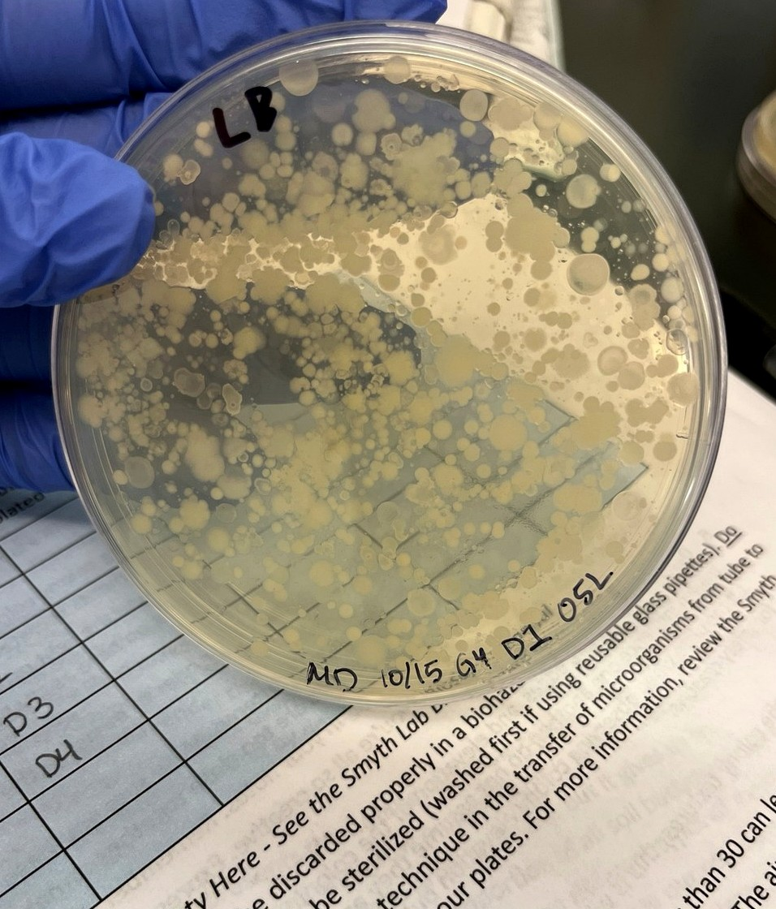

Microbiology · Antibiotic Discovery
Tiny Earth
A semester-long research project focused on isolating soil bacteria and screening them for potential antimicrobial activity.
Purpose
The purpose of this project was to investigate soil microorganisms as possible sources of antibiotic-producing bacteria.
What I Did
I processed a soil sample, isolated bacterial colonies, completed pick-and-patch testing, performed tester overlays, and evaluated zones of inhibition.
Results
Several isolates demonstrated antimicrobial activity. Genomic analysis later supported the identification of an antibiotic-producing isolate.